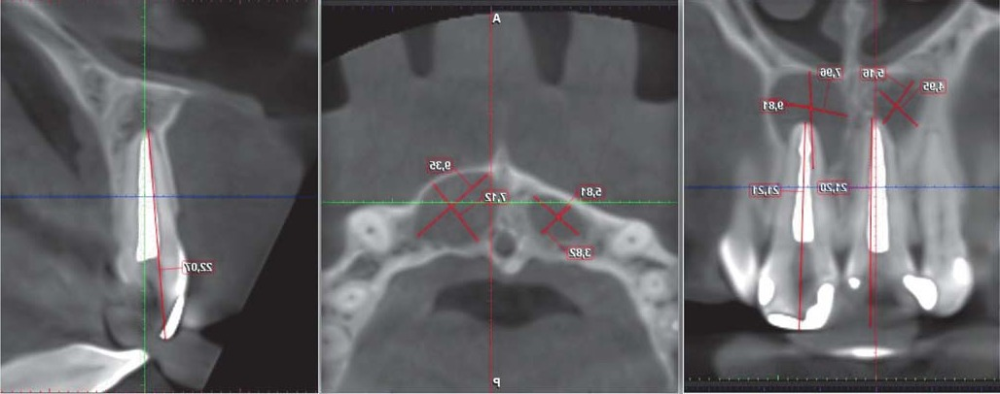
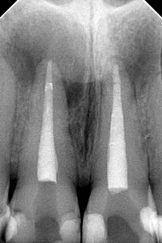
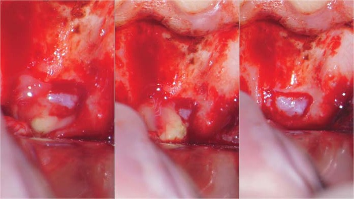
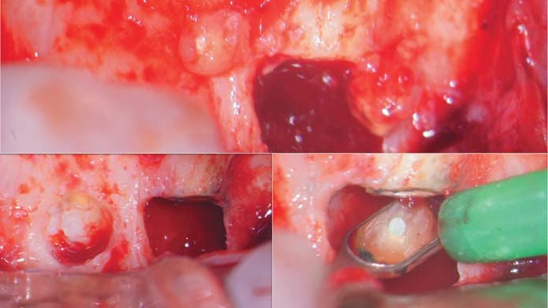
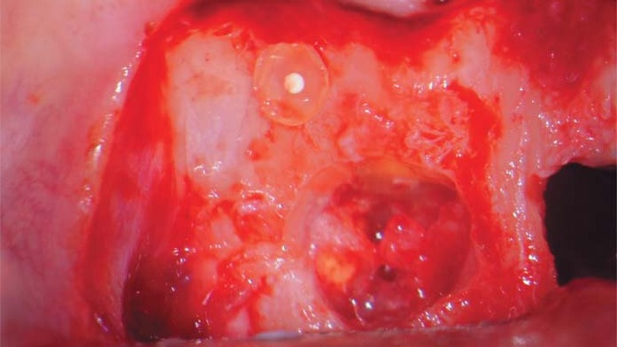
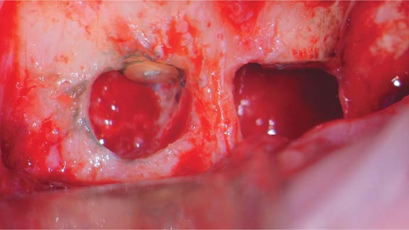
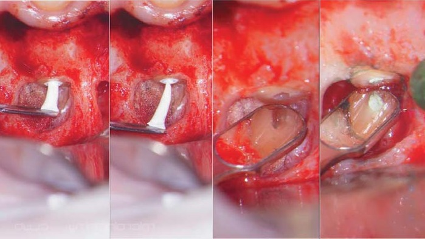
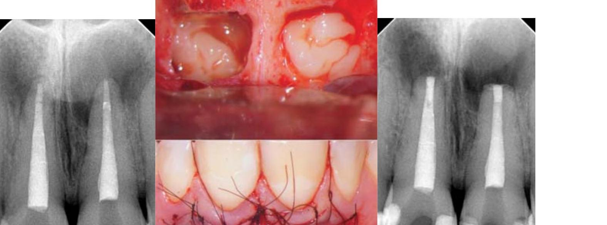
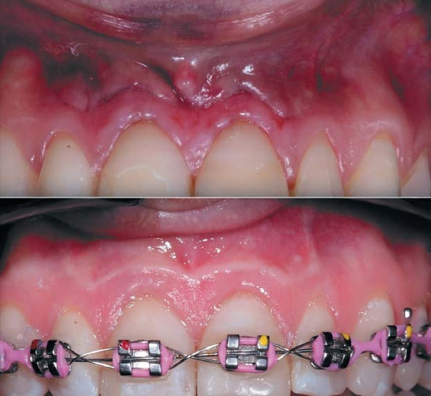
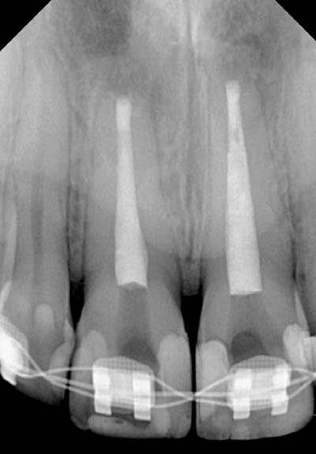

Ендодонтія · журнал «ДентАрт» 2024 №4
Апікальна хірургія як спосіб збереження зубів в естетично важливій зоні
APICAL SURGERY AS A WAY TO PRESERVE TEETH IN AN AESTHETICALLY IMPORTANT AREA
Цього разу хочу поглибити у колег розуміння і сприйняття такого суперечливого і недооціненого методу лікування, як апікальна хірургія. На самому початку хочу зазначити, що ми не порівнюємо резекцію верхівки кореня і апікальну хірургію, бо в цих двох методах спільне – лише мета лікування: врятувати зуб. Розповім про переваги і показання при виборі такого методу лікування, як апікальна хірургія.
Уже давно відомо, як правильно виконувати такі маніпуляції і скільки часу може зайняти хірургічне втручання, але переваги цього методу знецінюються багатьма лікарями і пацієнтами саме через недостатні знання і навички. Протокол повністю змінено, його покращено, з'явилися цілком нові вимоги до матеріально-технічної бази в цьому напрямку, а також до мануальних здібностей і теоретично-практичних знань лікаря. Багато важливих інструментів і матеріалів потрібно мати для апікальної хірургії, тому що їх відсутність негативно вплине на якість лікування і віддалений результат. Кожна частина протоколу має свої нюанси. Зараз мова йде не тільки про втручання, а й про консультацію, обстеження, потрібні для встановлення діагнозу, і зібраний анамнез. Уже навіть не говоримо про вибір форми клаптя і номеру ниток, які сьогодні використовують в апікальній хірургії…
Різниця між апікальною хірургією як мікрохірургічною операцією, спрямованою на збереження зуба шляхом видалення вогнища інфекції з кореня зуба і герметичного пломбування каналу з боку кістки, та резекцією колосальна. Хоча б згадати про обробку апікальної частини зуба перед обтурацією – наконечники, бори, матеріали… І сперечатися немає сенсу, тому що всі досягнення перевірені і підтверджені результатами в розділі медицини, яка заснована на доказах (evidence Based Medicine).
Здавалося б, яким чином ендодонтія може вплинути на долю естетики?! Це риторичне питання. Від можливості лікаря-терапевта зберегти зуби фронтальної ділянки залежить дуже багато, тому я переконаний, що саме лікар-ендодонтист має виконувати лікування за цією методикою. Тож для вирішення такого важливого завдання, як лікування зубів, що розміщені в естетичній зоні усмішки і мають запалення на верхівках коренів, існують ортоградна ревізія та ретроградна. Про ортоградну ревізію наші пацієнти знають, тому що це стандартна процедура, яку ендодонтисти виконують щодня. Про ретроградну ревізію знають лише пацієнти, які пройшли через хірургічне відділення, де вони отримали негативний досвід лікування у вигляді резекції верхівки кореня. На жаль, правильно цю маніпуляцію раніше могли виконати лише поодинокі лікарі-хірурги. З розвитком мікроскопної стоматології, з появою збільшення як невід'ємної частини протоколу та інструментів суттєво змінився підхід до кожного етапу цієї маніпуляції.
Пацієнтів дуже часто турбують проблеми в естетичній зоні. Це ключовий момент у плануванні і реконструкції будь-якої усмішки. Як ендодонтист, я часто чую від колег, котрі скеровують пацієнта, чи можна буде зберегти той чи інший зуб фронтальної ділянки обох щелеп, тому що всі, і пацієнти, і лікарі, розуміють, що дефекти у фронтальному відділі – чи не найскладніші, і починаючи лікування, пацієнт цікавиться:
– а зуб витримає?
– а чи є гарантія?
– а потім доведеться ставити імплантат?
Це найпопулярніші запитання від пацієнтів під час консультації і планування ревізії зубів, які вже були ліковані.
Головне – це надати пацієнтові одночасно і вибір, і правдиву інформацію. Але це має стосуватися можливості вибору типу маніпуляції, автоматично фінансових питань і часових меж. Просто найчастіше після збору анамнезу, отримання від пацієнта інформації, яка стосується всіх аспектів і фінансових можливостей також, протокол роботи обирає лікар і пацієнт не має можливості впливати на хід операції. Тобто якщо є показання для ортоградної ревізії, то лікар її пропонує.
Отже, пацієнтка звернулася в клініку для вирішення естетичних проблем, пов'язаних з неестетичними реставраціями та деякими проблемами з прикусом. Пацієнтка у мене лікувалася реферативно, тому просто передам побажання лікаря-куратора-реферала, з яким у нас відбулася розмова про побажання цієї пацієнтки. По суті, мене просили вирішити питання з двома центральними різцями верхньої щелепи, які вже ліковані не раз.
Діагноз: хронічний періодонтит зубів 11 і 21. Лікар пояснив мені, що процес, який видно на прицільній рентгенограмі на верхівках обох зубів, протягом року не загоюється, і вже давно потрібно вдягнути брекети, щоб вирівняти прикус, а загоєння немає. Стан зубів пацієнтки погіршується.
Для чіткого протоколу та стабільної роботи під час операції потрібно попередньо проаналізувати всі знімки. На консультації слід отримати як прицільну рентгенографію зуба, так і КПКТ. Точний прицільний знімок дасть можливість розглянути детальніше вміст каналів, і навіть можемо роздивитися, яким матеріалом вони запломбовані, а на КПКТ ми обов'язково робимо всі вимірювання, необхідні для проведення розрізів, визначення довжини зуба, для розуміння занурення фрез углиб тканин і того, який об'єм уражених тканин.



Окремо відводиться час для анестезії – достатньо правильно проведеної інфільтрації, щоб пацієнта ніщо не турбувало під час операції і накладання швів. Після правильної анестезії слизова завжди покаже, який у неї колір, і це може сказати нам, що можна почати операцію. Доки пацієнт очікує початку операції, робимо забір крові для виготовлення PRF-мембрани, яка нам знадобиться наприкінці перед ушиванням клаптя.
У цьому випадку пропонувати пацієнтці проведення ретроградної ревізії доцільно, тому що попереднє лікування неефективне і пов'язане воно з наявністю мікробної флори в апікальних дельтах, де наші методики ще не можуть дати позитивного результату. Ось чому ортоградна ревізія не дає гарантії успішного лікування. Ретроградна ревізія, у свою чергу, значно підвищує відсоток загоєння після операції.
У цьому клінічному випадку використовувався субмаргінальний розріз. Показання: наявність ортопедичної коронки, періапікальна операція у фронтальній ділянці, відносно довгі корені, широка зона прикріплених кератинізованих ясен.

Переваги: простота формування та відшарування, покращення доступу та візуалізації, простота репозиціонування, зберігає цілісність ясенного прикріплення, запобігає розвитку рецесії ясен, утворенню щілинних дефектів, атрофії кістки гребеня.
Недоліки: вертикальний розріз виходить за лінію слизово-ясенного з'єднання і може пошкодити м'язи, горизонтальний розріз порушує кровообіг, важко змінити розмір при помилці.
Для трепанації використовується хірургічний наконечник з нахилом головки 45° для зручності виконання маніпуляцій, а також ці наконечники важливі тому, що повітря не дме в рану. Бори, які використовуються для трепанації, називаються за іменами авторів – Ліндемана та Зекрія. Також потрібно мати кулястий твердосплавний бор на довгій ніжці, і бажано двох розмірів.

Щоб було зручно виконувати цистектомію, потрібно мати багато різного інструментарію, кюрети та кюретажні ложки. За допомогою цих інструментів можна легко та обережно відшарувати оболонку, бажано після резекції апексу, оскільки сам факт відсутності апікальної частини кореня покращує доступ до всього патологічного вогнища. Метою кюретажу є повне видалення патологічно змінених тканин. При виявленні кісти її вміст аспірують, а потім видаляють її оболонку. У випадку гранульоми виявити оболонку дещо складніше, а кюретаж займає більше часу. Більші ділянки зручніше видаляти ложкою/кюретою, а на дрібних та складних ділянках краще спрацює кюрета. Остаточний кюретаж робиться після отримання контрольної рентгенограми для перевірки якості обтурації. Слід зазначити, що залишкові волокна, коагульовані внаслідок впливу гемостатиків, значно легше видалити. Крім того, кюретаж безпосередньо перед зшиванням рани дозволяє ініціювати кровоточивість кісткових стінок, що сприяє утворенню згустка крові в просторі дефекту.

Фаска кореня вивчається під великим збільшенням (×20) за допомогою мікродзеркал, спеціально призначених для мікрохірургічної ендодонтії. Такі дзеркала приблизно в 10 разів менші, ніж стандартні, а їх відбиваюча поверхня зазвичай складається з родію, сапфіру або полірованого вольфраму. Мікродзеркала полегшують візуалізацію контурів кореня та поверхні спилу, особливо у важкодоступних місцях.
Для профарбовування пародонтальної зв'язки зручно використовувати метиленовий синій. Слід зазначити, що після нанесення барвника порожнину кістки і поверхню кореня потрібно промити і злегка висушити. Цей прийом значно полегшує виявлення перешийків та каналів, зокрема і з С-подібним перерізом. Для підтвердження локалізації каналу рекомендується використовувати гострий зонд № 17.

На цьому етапі також можна виявити мікротріщини, протяжність яких потребує ретельного вивчення. По можливості поверхню спилу поступово шліфують бором Зекрія, доки тріщина не зникне.
Якщо тріщина занадто корональна, втручання слід припинити і повідомити пацієнта про низьку ймовірність успіху в лікуванні (менше 30 %!). При тріщині одного з коренів багатокореневого зуба можна провести резекцію кореня (залежно від того, чи є достатня залишкова підтримка).


Апікальне хірургічне втручання здійснюється за допомогою маніпуляцій, які подібні до консервативного ендодонтичного лікування. Після препарування та дезінфекції кореневого каналу його обтурують. Розпломбування та обтурація необхідні для запобігання проникненню мікроорганізмів і продуктів життєдіяльності з каналу в періапікальні тканини. У минулому для пломбування каналів використовували різні матеріали, але нині застосовуються тільки ті, які мають доведену ефективність, зокрема цементи МТА та Bioceramic.
Коли знімати шви?! В усіх джерелах, які розповідають про правила та протоколи, написано та роз'яснено, що з біологічної точки зору, коли формується епітеліальний бар'єр, функція шва закінчується. Фактично, шов повинен утримувати протилежні краї рани до тих пір, доки фізіологічні механізми відновлення організму не забезпечать достатньо міцного контакту, щоб функціонувати без подальшої «допомоги».
Оскільки епітеліальний бар'єр виникає через 24–48 годин після розрізу ендодонтичної мікрохірургії, бажано зняти шви через 48–72 години. Тривале утримання швів на рані не дає жодної користі і може призвести до затримки загоєння через можливе скупчення їжі і зубного нальоту, а також поглинання бактерій і рідин на поверхні шва. На жаль, не вдалося зняти шви власноруч, тому що пацієнтка в день операції відразу поїхала у своє рідне місто. Але вона автоматично потрапляє під контроль лікаря-куратора. Позитивним є те, що пацієнтку ніщо не турбує в ділянці розрізу в перший день операції, і максимально, що було потрібне, – це прийняти нестероїдні протизапальні препарати на ніч, щоб виспатись.
Зранку часто пацієнти описують стан як стабільний, без болю, але з відчуттям набряку. Найголовніше, що у пацієнтів нічого не болить, і в день зняття швів вони просто тішаться тим, що їх уже немає і можна переходити до подальших кроків. У такій ситуації бажано не починати ортодонтичне лікування, а витримати термін 2 місяці для стабілізації процесів, і тільки після цього можна починати вирівнювати зуби.


Висновки
Апікальна хірургія – потужний спосіб збереження зубів в ендодонтичній практиці. Не можна нехтувати таким серйозним способом, як апікальна хірургія, щоб уникнути видалення зуба. Єдиною умовою є те, що тільки лікар, який використовує операційний мікроскоп та розуміє анатомію кореневих каналів, може виконати таку маніпуляцію якісно. Це доведено відомими у світі ендодонтистами, праця яких описана в підручниках і статтях.